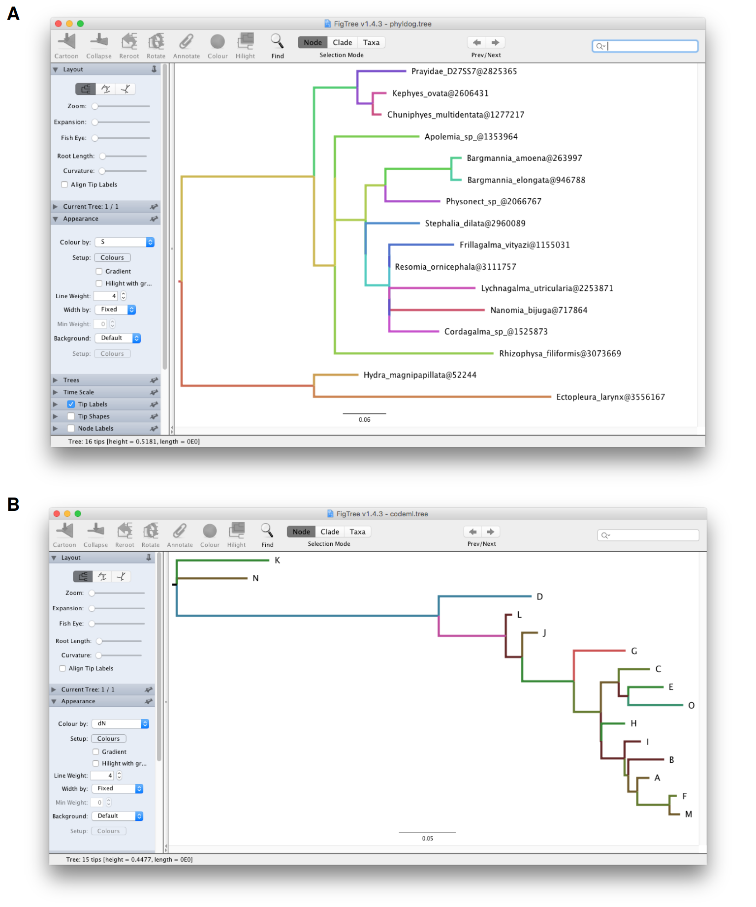

library('jsonlite')
library('tidyverse')
library("treeio")
library("yulab.utils")
source("software-link.R")3 Exporting tree with data
options(show_data_for_treedata = FALSE)3.1 Introduction
The treeio package (Wang et al., 2020) supports parsing various phylogenetic tree file formats including software outputs that contain evolutionary evidence. Some of the formats are just log files (e.g., PAML and r8s output), while some of the others are non-standard formats (e.g., BEAST and MrBayes output that introduce a square bracket, which was reserved to store comments in standard Nexus format, to store inferences). With treeio, we are now able to parse these files to extract phylogenetic trees and map associated data on the tree structure. Exporting tree structure is easy, users can use the as.phyo() method defined in treeio to convert a treedata object to a phylo object and then use write.tree() or write.nexus() implemented in ape package (Paradis et al., 2004) to export the tree structure as Newick text or Nexus file. This is quite useful for converting non-standard formats to a standard format and for extracting trees from software outputs, such as log files.
However, exporting a tree with associated data is still challenging. These associated data can be parsed from analysis programs or obtained from external sources (e.g., phenotypic data, experimental data, and clinical data). The major obstacle here is that there is no standard format designed for storing a tree with data. NeXML (Vos et al., 2012) may be the most flexible format. However, it is currently not widely supported. Most of the analysis programs in this field rely extensively on Newick string and Nexus format. In my opinion, although BEAST Nexus format may not be the best solution, it is currently a good approach for storing heterogeneous associated data. The beauty of the format is that all the annotated elements are stored within square brackets, which are reserved for comments. In this way, existing programs that can read standard Nexus format are able to parse it by ignoring the annotated elements.
3.2 Exporting Tree Data to BEAST Nexus Format
3.2.1 Exporting/converting software output
The treeio package (Wang et al., 2020) provides the write.beast() function to export treedata object as BEAST Nexus file (Bouckaert et al., 2014). With treeio, it is easy to convert software output to BEAST format if the output can be parsed by treeio (see Chapter 1).
Here is an example of converting NHX file to BEAST format:
nhxfile <- system.file("extdata/NHX", "phyldog.nhx", package="treeio")
nhx <- read.nhx(nhxfile)
# write.beast(nhx, file = "phyldog.tree")
write.beast(nhx)x <- '#NEXUS
[R-package treeio, Thu Oct 14 11:24:19 2021]
BEGIN TAXA;
DIMENSIONS NTAX = 16;
TAXLABELS
Prayidae_D27SS7@2825365
Kephyes_ovata@2606431
Chuniphyes_multidentata@1277217
Apolemia_sp_@1353964
Bargmannia_amoena@263997
Bargmannia_elongata@946788
Physonect_sp_@2066767
Stephalia_dilata@2960089
Frillagalma_vityazi@1155031
Resomia_ornicephala@3111757
Lychnagalma_utricularia@2253871
Nanomia_bijuga@717864
Cordagalma_sp_@1525873
Rhizophysa_filiformis@3073669
Hydra_magnipapillata@52244
Ectopleura_larynx@3556167
;
END;
BEGIN TREES;
TRANSLATE
1 Prayidae_D27SS7@2825365,
2 Kephyes_ovata@2606431,
3 Chuniphyes_multidentata@1277217,
4 Apolemia_sp_@1353964,
5 Bargmannia_amoena@263997,
6 Bargmannia_elongata@946788,
7 Physonect_sp_@2066767,
8 Stephalia_dilata@2960089,
9 Frillagalma_vityazi@1155031,
10 Resomia_ornicephala@3111757,
11 Lychnagalma_utricularia@2253871,
12 Nanomia_bijuga@717864,
13 Cordagalma_sp_@1525873,
14 Rhizophysa_filiformis@3073669,
15 Hydra_magnipapillata@52244,
16 Ectopleura_larynx@3556167
;
TREE * UNTITLED = [&R] (((1[&Ev=S,ND=0,S=58]:0.0682841,(2[&Ev=S,ND=1,
S=69]:0.0193941,3[&Ev=S,ND=2,S=70]:0.0121378)[&Ev=S,ND=3,S=60]:0.0217782)
[&Ev=S,ND=4,S=36]:0.0607598,((4[&Ev=S,ND=9,S=31]:0.11832,(((5[&Ev=S,ND=10,
S=37]:0.0144549,6[&Ev=S,ND=11,S=38]:0.0149723)[&Ev=S,ND=12,S=33]:0.0925388,
7[&Ev=S,ND=13,S=61]:0.077429)[&Ev=S,ND=14,S=24]:0.0274637,(8[&Ev=S,ND=15,
S=52]:0.0761163,((9[&Ev=S,ND=16,S=53]:0.0906068,10[&Ev=S,ND=17,S=54]:1e-06)
[&Ev=S,ND=18,S=45]:1e-06,((11[&Ev=S,ND=19,S=65]:0.120851,12[&Ev=S,ND=20,
S=71]:0.133939)[&Ev=S,ND=21,S=56]:1e-06,13[&Ev=S,ND=22,S=64]:0.0693814)
[&Ev=S,ND=23,S=46]:1e-06)[&Ev=S,ND=24,S=40]:0.0333823)[&Ev=S,ND=25,S=35]:
1e-06)[&Ev=D,ND=26,S=24]:0.0431861)[&Ev=S,ND=27,S=19]:1e-06,14[&Ev=S,ND=28,
S=26]:0.22283)[&Ev=S,ND=29,S=17]:0.0292362)[&Ev=D,ND=8,S=17]:0.185603,
(15[&Ev=S,ND=5,S=16]:0.0621782,16[&Ev=S,ND=6,S=15]:0.332505)[&Ev=S,ND=7,
S=12]:0.185603)[&Ev=S,ND=30,S=9];
END;'
writeLines(x)NA #NEXUS
NA [R-package treeio, Thu Oct 14 11:24:19 2021]
NA
NA BEGIN TAXA;
NA DIMENSIONS NTAX = 16;
NA TAXLABELS
NA Prayidae_D27SS7@2825365
NA Kephyes_ovata@2606431
NA Chuniphyes_multidentata@1277217
NA Apolemia_sp_@1353964
NA Bargmannia_amoena@263997
NA Bargmannia_elongata@946788
NA Physonect_sp_@2066767
NA Stephalia_dilata@2960089
NA Frillagalma_vityazi@1155031
NA Resomia_ornicephala@3111757
NA Lychnagalma_utricularia@2253871
NA Nanomia_bijuga@717864
NA Cordagalma_sp_@1525873
NA Rhizophysa_filiformis@3073669
NA Hydra_magnipapillata@52244
NA Ectopleura_larynx@3556167
NA ;
NA END;
NA BEGIN TREES;
NA TRANSLATE
NA 1 Prayidae_D27SS7@2825365,
NA 2 Kephyes_ovata@2606431,
NA 3 Chuniphyes_multidentata@1277217,
NA 4 Apolemia_sp_@1353964,
NA 5 Bargmannia_amoena@263997,
NA 6 Bargmannia_elongata@946788,
NA 7 Physonect_sp_@2066767,
NA 8 Stephalia_dilata@2960089,
NA 9 Frillagalma_vityazi@1155031,
NA 10 Resomia_ornicephala@3111757,
NA 11 Lychnagalma_utricularia@2253871,
NA 12 Nanomia_bijuga@717864,
NA 13 Cordagalma_sp_@1525873,
NA 14 Rhizophysa_filiformis@3073669,
NA 15 Hydra_magnipapillata@52244,
NA 16 Ectopleura_larynx@3556167
NA ;
NA TREE * UNTITLED = [&R] (((1[&Ev=S,ND=0,S=58]:0.0682841,(2[&Ev=S,ND=1,
NA S=69]:0.0193941,3[&Ev=S,ND=2,S=70]:0.0121378)[&Ev=S,ND=3,S=60]:0.0217782)
NA [&Ev=S,ND=4,S=36]:0.0607598,((4[&Ev=S,ND=9,S=31]:0.11832,(((5[&Ev=S,ND=10,
NA S=37]:0.0144549,6[&Ev=S,ND=11,S=38]:0.0149723)[&Ev=S,ND=12,S=33]:0.0925388,
NA 7[&Ev=S,ND=13,S=61]:0.077429)[&Ev=S,ND=14,S=24]:0.0274637,(8[&Ev=S,ND=15,
NA S=52]:0.0761163,((9[&Ev=S,ND=16,S=53]:0.0906068,10[&Ev=S,ND=17,S=54]:1e-06)
NA [&Ev=S,ND=18,S=45]:1e-06,((11[&Ev=S,ND=19,S=65]:0.120851,12[&Ev=S,ND=20,
NA S=71]:0.133939)[&Ev=S,ND=21,S=56]:1e-06,13[&Ev=S,ND=22,S=64]:0.0693814)
NA [&Ev=S,ND=23,S=46]:1e-06)[&Ev=S,ND=24,S=40]:0.0333823)[&Ev=S,ND=25,S=35]:
NA 1e-06)[&Ev=D,ND=26,S=24]:0.0431861)[&Ev=S,ND=27,S=19]:1e-06,14[&Ev=S,ND=28,
NA S=26]:0.22283)[&Ev=S,ND=29,S=17]:0.0292362)[&Ev=D,ND=8,S=17]:0.185603,
NA (15[&Ev=S,ND=5,S=16]:0.0621782,16[&Ev=S,ND=6,S=15]:0.332505)[&Ev=S,ND=7,
NA S=12]:0.185603)[&Ev=S,ND=30,S=9];
NA END;Another example of converting CODEML output to BEAST format:
mlcfile <- system.file("extdata/PAML_Codeml", "mlc", package="treeio")
ml <- read.codeml_mlc(mlcfile)
# write.beast(ml, file = "codeml.tree")
write.beast(ml) # output not shownx <- '#NEXUS
[R-package treeio, Thu Oct 14 11:27:48 2021]
BEGIN TAXA;
DIMENSIONS NTAX = 15;
TAXLABELS
A
B
C
D
E
F
G
H
I
J
K
L
M
N
O
;
END;
BEGIN TREES;
TRANSLATE
1 A,
2 B,
3 C,
4 D,
5 E,
6 F,
7 G,
8 H,
9 I,
10 J,
11 K,
12 L,
13 M,
14 N,
15 O
;
TREE * UNTITLED = [&U] (11[&t=0.082,N=1514.9,S=633.1,dN_vs_dS=0.0224,
dN=0.002,dS=0.0878,N_x_dN=3,S_x_dS=55.6]:0.081785,14[&t=0.062,N=1514.9,
S=633.1,dN_vs_dS=0.0095,dN=7e-04,dS=0.0689,N_x_dN=1,S_x_dS=43.6]:0.062341,
(4[&t=0.082,N=1514.9,S=633.1,dN_vs_dS=0.0385,dN=0.0033,dS=0.0849,N_x_dN=5,
S_x_dS=53.8]:0.082021,(12[&t=0.006,N=1514.9,S=633.1,dN_vs_dS=1e-04,dN=0,
dS=0.0062,N_x_dN=0,S_x_dS=3.9]:0.005508,(10[&t=0.014,N=1514.9,S=633.1,
dN_vs_dS=0.0457,dN=7e-04,dS=0.0143,N_x_dN=1,S_x_dS=9]:0.013996,(7[&t=0.046,
N=1514.9,S=633.1,dN_vs_dS=0.1621,dN=0.006,dS=0.0373,N_x_dN=9.2,S_x_dS=23.6]:
0.045746,((3[&t=0.028,N=1514.9,S=633.1,dN_vs_dS=0.0461,dN=0.0013,dS=0.0282,
N_x_dN=2,S_x_dS=17.9]:0.02773,(5[&t=0.031,N=1514.9,S=633.1,dN_vs_dS=0.0641,
dN=0.002,dS=0.0305,N_x_dN=3,S_x_dS=19.3]:0.031104,15[&t=0.048,N=1514.9,
S=633.1,dN_vs_dS=0.0538,dN=0.0026,dS=0.0485,N_x_dN=4,S_x_dS=30.7]:0.048389)
23[&t=0.008,N=1514.9,S=633.1,dN_vs_dS=1e-04,dN=0,dS=0.0094,N_x_dN=0,
S_x_dS=6]:0.008328)22[&t=0.016,N=1514.9,S=633.1,dN_vs_dS=0.0395,dN=7e-04,
dS=0.0165,N_x_dN=1,S_x_dS=10.4]:0.015959,(8[&t=0.021,N=1514.9,S=633.1,
dN_vs_dS=0.1028,dN=0.002,dS=0.0191,N_x_dN=3,S_x_dS=12.1]:0.021007,
(9[&t=0.015,N=1514.9,S=633.1,dN_vs_dS=1e-04,dN=0,dS=0.0167,N_x_dN=0,
S_x_dS=10.6]:0.014739,(2[&t=0.032,N=1514.9,S=633.1,dN_vs_dS=1e-04,
dN=0,dS=0.0358,N_x_dN=0,S_x_dS=22.7]:0.031643,(1[&t=0.01,N=1514.9,
S=633.1,dN_vs_dS=0.0646,dN=7e-04,dS=0.0101,N_x_dN=1,S_x_dS=6.4]:0.01034,
(6[&t=0.007,N=1514.9,S=633.1,dN_vs_dS=0.298,dN=0.0013,dS=0.0044,N_x_dN=2,
S_x_dS=2.8]:0.006649,13[&t=0.009,N=1514.9,S=633.1,dN_vs_dS=0.0738,dN=7e-04,
dS=0.0088,N_x_dN=1,S_x_dS=5.6]:0.009195)28[&t=0.028,N=1514.9,S=633.1,
dN_vs_dS=0.0453,dN=0.0013,dS=0.0289,N_x_dN=2,S_x_dS=18.3]:0.028303)27
[&t=0.008,N=1514.9,S=633.1,dN_vs_dS=0.0863,dN=7e-04,dS=0.0076,N_x_dN=1,
S_x_dS=4.8]:0.008072)26[&t=0.003,N=1514.9,S=633.1,dN_vs_dS=1.5591,dN=0.0013,
dS=8e-04,N_x_dN=2,S_x_dS=0.5]:0.0035)25[&t=0.02,N=1514.9,S=633.1,
dN_vs_dS=1e-04,dN=0,dS=0.023,N_x_dN=0,S_x_dS=14.6]:0.020359)24[&t=0.001,
N=1514.9,S=633.1,dN_vs_dS=1e-04,dN=0,dS=6e-04,N_x_dN=0,S_x_dS=0.4]:0.000555)
21[&t=0.024,N=1514.9,S=633.1,dN_vs_dS=0.0549,dN=0.0013,dS=0.0237,N_x_dN=2,
S_x_dS=15]:0.023675)20[&t=0.046,N=1514.9,S=633.1,dN_vs_dS=0.0419,dN=0.002,
dS=0.047,N_x_dN=3,S_x_dS=29.8]:0.045745)19[&t=0.015,N=1514.9,S=633.1,
dN_vs_dS=1e-04,dN=0,dS=0.0166,N_x_dN=0,S_x_dS=10.5]:0.014684)18[&t=0.059,
N=1514.9,S=633.1,dN_vs_dS=0.0964,dN=0.0053,dS=0.0545,N_x_dN=8,S_x_dS=34.5]:
0.059308)17[&t=0.232,N=1514.9,S=633.1,dN_vs_dS=0.0129,dN=0.0033,dS=0.2541,
N_x_dN=5,S_x_dS=160.9]:0.231628)16;
END;'
writeLines(x)Some software tools that do not support these outputs can be supported through data conversion. For example, we can convert the NHX file to BEAST file and use NHX tags to color the tree using FigTree (Figure ?fig-beastFigtreeA) or convert CODEML output and use dN/dS, dN, or dS to color the tree in FigTree (Figure ?fig-beastFigtreeB). Before conversion, these files could not be opened in Figtree. Treeio’s conversion function makes data available to other software tools and expands the application range of these tools.

NHX file (A) and CodeML output (B) in FigTree is not supported. treeio can convert these files to BEAST compatible NEXUS format which can be directly opened in FigTree and visualized together with annotated data.3.2.2 Combining tree with external data
Using the utilities provided by tidytree and treeio, it is easy to link external data onto the corresponding phylogeny. The write.beast() function enables users to export the tree with external data to a single tree file.
phylo <- as.phylo(nhx)
## save space for printing the tree text
phylo$edge.length <- round(phylo$edge.length, 2)
## print the newick text
write.tree(phylo)x <- "(((Prayidae_D27SS7@2825365:0.07,(Kephyes_ovata@2606431:0.02,
Chuniphyes_multidentata@1277217:0.01):0.02):0.06,((Apolemia_sp_@1353964:0.12,
(((Bargmannia_amoena@263997:0.01,Bargmannia_elongata@946788:0.01):0.09,
Physonect_sp_@2066767:0.08):0.03,(Stephalia_dilata@2960089:0.08,
((Frillagalma_vityazi@1155031:0.09,Resomia_ornicephala@3111757:0):0,
((Lychnagalma_utricularia@2253871:0.12,Nanomia_bijuga@717864:0.13):0,
Cordagalma_sp_@1525873:0.07):0):0.03):0):0.04):0,Rhizophysa_filiformis@3073669:
0.22):0.03):0.19,(Hydra_magnipapillata@52244:0.06,
Ectopleura_larynx@3556167:0.33):0.19);"
writeLines(x)NA (((Prayidae_D27SS7@2825365:0.07,(Kephyes_ovata@2606431:0.02,
NA Chuniphyes_multidentata@1277217:0.01):0.02):0.06,((Apolemia_sp_@1353964:0.12,
NA (((Bargmannia_amoena@263997:0.01,Bargmannia_elongata@946788:0.01):0.09,
NA Physonect_sp_@2066767:0.08):0.03,(Stephalia_dilata@2960089:0.08,
NA ((Frillagalma_vityazi@1155031:0.09,Resomia_ornicephala@3111757:0):0,
NA ((Lychnagalma_utricularia@2253871:0.12,Nanomia_bijuga@717864:0.13):0,
NA Cordagalma_sp_@1525873:0.07):0):0.03):0):0.04):0,Rhizophysa_filiformis@3073669:
NA 0.22):0.03):0.19,(Hydra_magnipapillata@52244:0.06,
NA Ectopleura_larynx@3556167:0.33):0.19);library(tidytree)tidytree v0.4.7 Learn more at https://yulab-smu.top/contribution-tree-data/
Please cite:
L Zhan, X Luo, W Xie, XA Zhu, Z Xie, J Lin, L Li, W Tang, R Wang, L
Deng, Y Liao, B Liu, Y Cai, Q Wang, S Xu, G Yu. shinyTempSignal: an R
shiny application for exploring temporal and other phylogenetic
signals. Journal of Genetics and Genomics 2024, 51(7):762-768. doi:
10.1016/j.jgg.2024.02.004
Attaching package: 'tidytree'The following object is masked from 'package:treeio':
getNodeNumThe following object is masked from 'package:stats':
filterN <- Nnode2(phylo)
fake_data <- tibble(node = 1:N, fake_trait = round(rnorm(N), 2),
another_trait = round(runif(N), 2))
fake_tree <- full_join(phylo, fake_data, by = "node")
# write.beast(fake_tree)
## to save space, use a subtree
fake_tree2 = tree_subset(fake_tree, node=27, levels_back=0)
write.beast(fake_tree2)#NEXUS
[R-package treeio, Sun Jan 11 02:24:57 2026]
BEGIN TAXA;
DIMENSIONS NTAX = 5;
TAXLABELS
Frillagalma_vityazi@1155031
Resomia_ornicephala@3111757
Lychnagalma_utricularia@2253871
Nanomia_bijuga@717864
Cordagalma_sp_@1525873
;
END;
BEGIN TREES;
TRANSLATE
1 Frillagalma_vityazi@1155031,
2 Resomia_ornicephala@3111757,
3 Lychnagalma_utricularia@2253871,
4 Nanomia_bijuga@717864,
5 Cordagalma_sp_@1525873
;
TREE * UNTITLED = [&R] ((1[&fake_trait=-0.98,another_trait=0.67]:0.09,2[&fake_trait=0.06,another_trait=0.54]:0)[&fake_trait=-0.5,another_trait=0.5]:0,(5[&fake_trait=-0.12,another_trait=0.08]:0.07,(3[&fake_trait=-0.61,another_trait=0.41]:0.12,4[&fake_trait=0.79,another_trait=0.24]:0.13)[&fake_trait=1.14,another_trait=0.93]:0)[&fake_trait=0.78,another_trait=0.69]:0):0.29;
END;x <- "#NEXUS
[R-package treeio, Tue Nov 16 10:13:32 2021]
BEGIN TAXA;
DIMENSIONS NTAX = 5;
TAXLABELS
Frillagalma_vityazi@1155031
Resomia_ornicephala@3111757
Lychnagalma_utricularia@2253871
Nanomia_bijuga@717864
Cordagalma_sp_@1525873
;
END;
BEGIN TREES;
TRANSLATE
1 Frillagalma_vityazi@1155031,
2 Resomia_ornicephala@3111757,
3 Lychnagalma_utricularia@2253871,
4 Nanomia_bijuga@717864,
5 Cordagalma_sp_@1525873
;
TREE * UNTITLED = [&R] ((1[&fake_trait=-1.42,another_trait=0.17]:0.09,
2[&fake_trait=0.19,another_trait=0.04]:0)[&fake_trait=0.85,
another_trait=0.56]:0,(5[&fake_trait=0.22,another_trait=0.73]:0.07,
(3[&fake_trait=0.02,another_trait=0.29]:0.12,4[&fake_trait=-1.29,
another_trait=0.35]:0.13)[&fake_trait=-0.33,another_trait=0.88]:0)
[&fake_trait=0.27,another_trait=0.94]:0):0.29;
END;"
writeLines(x)NA #NEXUS
NA [R-package treeio, Tue Nov 16 10:13:32 2021]
NA
NA BEGIN TAXA;
NA DIMENSIONS NTAX = 5;
NA TAXLABELS
NA Frillagalma_vityazi@1155031
NA Resomia_ornicephala@3111757
NA Lychnagalma_utricularia@2253871
NA Nanomia_bijuga@717864
NA Cordagalma_sp_@1525873
NA ;
NA END;
NA BEGIN TREES;
NA TRANSLATE
NA 1 Frillagalma_vityazi@1155031,
NA 2 Resomia_ornicephala@3111757,
NA 3 Lychnagalma_utricularia@2253871,
NA 4 Nanomia_bijuga@717864,
NA 5 Cordagalma_sp_@1525873
NA ;
NA TREE * UNTITLED = [&R] ((1[&fake_trait=-1.42,another_trait=0.17]:0.09,
NA 2[&fake_trait=0.19,another_trait=0.04]:0)[&fake_trait=0.85,
NA another_trait=0.56]:0,(5[&fake_trait=0.22,another_trait=0.73]:0.07,
NA (3[&fake_trait=0.02,another_trait=0.29]:0.12,4[&fake_trait=-1.29,
NA another_trait=0.35]:0.13)[&fake_trait=-0.33,another_trait=0.88]:0)
NA [&fake_trait=0.27,another_trait=0.94]:0):0.29;
NA END;After merging, the fake_trait and another_trait stored in fake_data will be linked to the tree, phylo, and stored in the treedata object, the fake_tree. The write.beast() function exports the tree with associated data to a single BEAST format file. The associated data can be used to visualize the tree using ggtree (Figure ?fig-beast) or FigTree (Figure ?fig-beastFigtree).
3.2.3 Merging tree data from different sources
Not only Newick tree text can be combined with associated data, but also tree data obtained from software output can be combined with external data, as well as different tree objects can be merged (for details, see Chapter 2).
## combine tree object with data
tree_with_data <- full_join(nhx, fake_data, by = "node")
tree_with_data'treedata' S4 object that stored information
of
'/home/runner/work/_temp/Library/treeio/extdata/NHX/phyldog.nhx'.
...@ phylo:
Phylogenetic tree with 16 tips and 15 internal nodes.
Tip labels:
Prayidae_D27SS7@2825365, Kephyes_ovata@2606431,
Chuniphyes_multidentata@1277217, Apolemia_sp_@1353964,
Bargmannia_amoena@263997, Bargmannia_elongata@946788, ...
Rooted; includes branch length(s).
with the following features available:
'V1', 'Ev', 'ND', 'S', 'fake_trait', 'another_trait'.## merge two tree object
tree2 <- merge_tree(nhx, fake_tree)
identical(tree_with_data, tree2)[1] FALSEAfter merging data from different sources, the tree with the associated data can be exported into a single file.
outfile <- tempfile(fileext = ".tree")
write.beast(tree2, file = outfile)The output BEAST Nexus file can be imported into R using the read.beast function and all the associated data can be used to annotate the tree using ggtree (Yu et al., 2017).
read.beast(outfile)'treedata' S4 object that stored information
of
'/tmp/RtmpJP2lgY/file24a743c6087b.tree'.
...@ phylo:
Phylogenetic tree with 16 tips and 15 internal nodes.
Tip labels:
Prayidae_D27SS7@2825365, Kephyes_ovata@2606431,
Chuniphyes_multidentata@1277217, Apolemia_sp_@1353964,
Bargmannia_amoena@263997, Bargmannia_elongata@946788, ...
Rooted; includes branch length(s).
with the following features available:
'another_trait', 'Ev', 'fake_trait', 'ND', 'S'.3.3 Exporting Tree Data to the jtree Format
The treeio package (Wang et al., 2020) provides the write.beast() function to export treedata to BEAST Nexus file. This is quite useful to convert file format, combine tree with data and merge tree data from different sources as we demonstrated in the previous session. The treeio package also supplies the read.beast() function to parse the output file of the write.beast() function. Although with treeio, the R community has the ability to manipulate BEAST Nexus format and process tree data, there is still a lacking library/package for parsing BEAST files in other programming languages.
JSON (JavaScript Object Notation) is a lightweight data-interchange format and is widely supported in almost all modern programming languages. To make it easy to import a tree with data in other programming languages, treeio supports exporting a tree with data in the jtree format, which is JSON-based and can be easy to parse using any language that supports JSON.
# write.jtree(tree2)
# to save space, use a subtree
tree3 <- tree_subset(tree2, node=24, levels_back=0)
write.jtree(tree3)NA {
NA "tree": "(Physonect_sp_@2066767:0.077429{3},(Bargmannia_amoena@263997:0.0144549
NA {1},Bargmannia_elongata@946788:0.0149723{2}):0.0925388{5}):0.28549{4};",
NA "data":[
NA {
NA "edge_num": 1,
NA "Ev": "S",
NA "ND": 10,
NA "S": 37,
NA "fake_trait": -0.69,
NA "another_trait": 0.42
NA },
NA {
NA "edge_num": 2,
NA "Ev": "S",
NA "ND": 11,
NA "S": 38,
NA "fake_trait": -0.95,
NA "another_trait": 0.38
NA },
NA {
NA "edge_num": 3,
NA "Ev": "S",
NA "ND": 13,
NA "S": 61,
NA "fake_trait": 0.59,
NA "another_trait": 0.65
NA },
NA {
NA "edge_num": 4,
NA "Ev": "S",
NA "ND": 14,
NA "S": 24,
NA "fake_trait": -0.69,
NA "another_trait": 0.06
NA },
NA {
NA "edge_num": 5,
NA "Ev": "S",
NA "ND": 12,
NA "S": 33,
NA "fake_trait": -0.58,
NA "another_trait": 0.4
NA }
NA ],
NA "metadata": {"info": "R-package treeio", "data": "Tue Nov 16 10:21:20 2021"}
NA }The jtree format is based on JSON and can be parsed using JSON parser.
jtree_file <- tempfile(fileext = '.jtree')
write.jtree(tree3, file = jtree_file)
jsonlite::fromJSON(jtree_file)NA $tree
NA [1] "(Physonect_sp_@2066767:0.077429{3},(Bargmannia_amoena@263997:0.0144549{1},
NA Bargmannia_elongata@946788:0.0149723{2}):0.0925388{5}):0.28549{4};"
NA
NA $data
NA edge_num Ev ND S fake_trait another_trait
NA 1 1 S 10 37 -0.69 0.42
NA 2 2 S 11 38 -0.95 0.38
NA 3 3 S 13 61 0.59 0.65
NA 4 4 S 14 24 -0.69 0.06
NA 5 5 S 12 33 -0.58 0.40
NA
NA $metadata
NA $metadata$info
NA [1] "R-package treeio"
NA
NA $metadata$data
NA [1] "Tue Nov 16 10:24:34 2021"The jtree file can be directly imported as a treedata object using the read.jtree() function provided also in treeio package (see also session 1.3).
read.jtree(jtree_file)'treedata' S4 object that stored information
of
'/tmp/RtmpJP2lgY/file24a775e7b4d5.jtree'.
...@ phylo:
Phylogenetic tree with 3 tips and 2 internal nodes.
Tip labels:
Physonect_sp_@2066767, Bargmannia_amoena@263997, Bargmannia_elongata@946788
Rooted; includes branch length(s).
with the following features available:
'Ev', 'ND', 'S', 'fake_trait', 'another_trait'.3.4 Summary
Phylogenetic tree-associated data is often stored in a separate file and needs the expertise to map the data to the tree structure. Lacking standardization to store and represent phylogeny and associated data makes it difficult for researchers to access and integrate the phylogenetic data into their studies. The treeio package provides functions to import phylogeny with associated data from several sources, including analysis findings from commonly used software and external data such as experimental data, clinical data, or meta-data. These trees and their associated data can be exported into a single file as BEAST or jtree formats, and the output file can be parsed back to R by treeio and the data is easy to access. The input and output utilities supplied by treeio package lay the foundation for phylogenetic data integration for downstream comparative study and visualization. It creates the possibility of integrating a tree with associated data from different sources and extends the applications of phylogenetic analysis in different disciplines.
Bouckaert, R., Heled, J., Kühnert, D., Vaughan, T., Wu, C.-H., Xie, D., Suchard, M. A., Rambaut, A., & Drummond, A. J. (2014). BEAST 2: A Software Platform for Bayesian Evolutionary Analysis. PLoS Comput Biol, 10(4), e1003537. https://doi.org/10.1371/journal.pcbi.1003537
Paradis, E., Claude, J., & Strimmer, K. (2004). APE: Analyses of Phylogenetics and Evolution in R language. Bioinformatics, 20(2), 289–290. https://doi.org/10.1093/bioinformatics/btg412
Vos, R. A., Balhoff, J. P., Caravas, J. A., Holder, M. T., Lapp, H., Maddison, W. P., Midford, P. E., Priyam, A., Sukumaran, J., Xia, X., & Stoltzfus, A. (2012). NeXML: Rich, extensible, and verifiable representation of comparative data and metadata. Systematic Biology, 61(4), 675–689. https://doi.org/10.1093/sysbio/sys025
Wang, L.-G., Lam, T. T.-Y., Xu, S., Dai, Z., Zhou, L., Feng, T., Guo, P., Dunn, C. W., Jones, B. R., Bradley, T., Zhu, H., Guan, Y., Jiang, Y., & Yu, G. (2020). Treeio: An r package for phylogenetic tree input and output with richly annotated and associated data. Molecular Biology and Evolution, 37(2), 599–603. https://doi.org/10.1093/molbev/msz240
Yu, G., Smith, D. K., Zhu, H., Guan, Y., & Lam, T. T.-Y. (2017). Ggtree: An r package for visualization and annotation of phylogenetic trees with their covariates and other associated data. Methods in Ecology and Evolution, 8(1), 28–36. https://doi.org/10.1111/2041-210X.12628